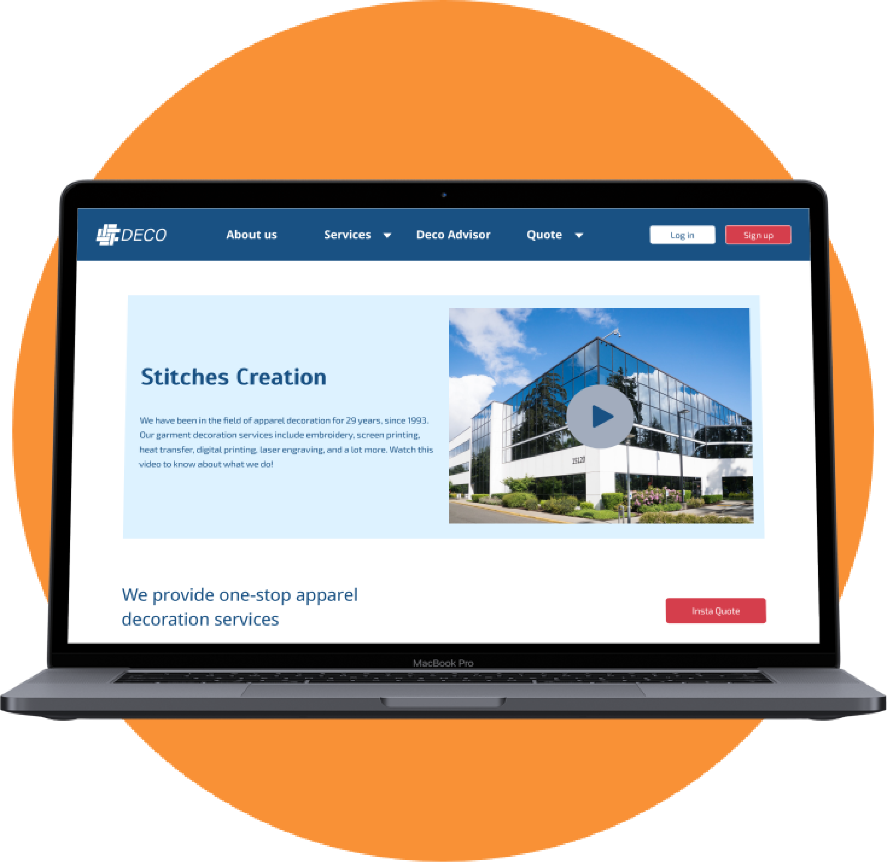

Redesigning the website to improve customers' ordering experience
Overview
Sector:
Small business, corporate and promotional companies, apparel decoration
Introduction:
Stitches Creation (SCdeco) is a wholesale apparel decorator whose customers are mainly promotional companies (B2B)
Challenge:
The company's website needs to be re-designed to connect with its customers, including more educational content and
better information architecture
My role:
A UX designer for this solo project for the company
Project time:
2 months
Problem
SCdeco's website failed to help clients achieve their goals
During the 3 years I worked at SCdeco, although the website had been updated over and over to promote the business,
whether the customer would find it useful was rarely considered. I found that the company's website was failing to help clients'
goals to understand different types of apparel decoration services the company provides, to find out about the cost of the services,
and to facilitate the communication about their inquiries.
"How can our website help customers achieve their goals?"
Solution
Website as a guide through the ordering process
A one-stop hub to help customers look for the most cost-effective apparel decoration method
Decoration advisor (wizard)
Quote calculator
Mock-up / design tool
Live chat
Order / shipping tracker

Research
1. Discovering about the audience
Survey
Hypothesis:
The original website is neither well-known nor used often by most of the customers.
Method:
Google Forms survey, done amongst 6 customers, 3 have been doing business with SCdeco for over
10 years, 3 just started last year
Results:
Shown in the charts and summary below
SCdeco's website was not well-utilized by its customers to educate themselves on the available services. Most of the
communication for ordering decorations was done through emails and phone calls. If the customer did not know too much
about apparel decoration methods, it would involve a lot of back-and-forth conversations, which would be quite time-consuming.
The survey showed that a more educational service page, a quote calculator, and an order tracker would be helpful in
the ordering process.
User Profile
The customer profile shown below describes SCdeco's customers' jobs (shown in yellow sticky notes),
pains (shown in orange sticky notes), and gains (shown in green sticky notes). The
jobs, pains, and gains are ranked from high to low based on the level significance, from top to bottom. This graph helped
me build the key features of the new SCdeco website by prioritizing the value of increasing customer satisfaction.
2. Defining the goals
Value Map
The value map consists of three parts, gain creators, pain relievers, and product & services. They are a reflection of the
customer profile in customer profile. Gain creators are the possible reasons that may increase customer satisfaction in the
ordering process. Pain relivers are the possible solutions to customer's concerns. Product and services are new features the
redesigned website focus on. And the goals are to implement these new features in the new website.
SCdeco's customers main goals are:
To find the most cost-effective decoration method(s) for their projects
To make sure the order can be finished and delivered with in the given period of time
To satisfy their customers
3. Key features
User Workflow
The user workflow describes a list of tasks the user is expected to complete on the redesigned website. The key features
marked in green are:
Educational service pages
A decoration wizard
Quote calculator
Live chat
Design tool
Order status tracker
Shipping status tracker
4. The competition
Competitive Analysis
Insights
To make sure the redesigned SCdeco's website can help customers achieve their goals, it needs to be:
Organized, so that the information users need can be easily found
Intuitive, so that users understand what is possible and what is not
Simple, so that users feel it's easy to follow through the ordering process
Design
A new website as a guide through the ordering process
Low-fidelity Prototype
New users can start with browsing the service page to understand the services SCdeco provides first. Or they can
use the decoration advisor (a decoration wizard) to find out the decoration method that best suits their project.
Existing users can jump into quoting, or they can also use the quote calculator to compare between different decoration
methods to see which one is more cost-effective. A design tool is also available for users to visualize their ideas.
After an order is placed, the user can log in to their account to check the status of the order.
High-fidelity Prototype
Play the video below to see a demo of the high-fidelity prototype. Click
here
to interact with the prototype.
Evaluation
Usability test of the new website
User Summary
3 users participated in the usability test of the protype of the redesigned Stitches Creation website. They come from
different age groups, and they have different levels of confidence with technology.
Tasks and User Performance
Above is a list of 3 tasks for 3 different scenarios, searching for the best decoration method, designing the look of
supplied garments, and tracking the order status. The cells highlighted in green indicate that the user completed the
task within the estimated time.
Results
All 3 participants found that the redesigned website was fairly easy to use. User 1 and User 2 gained more understanding
of the ordering process at Stitches Creation and the user workflow. User 3 gave the new website a lot of compliments
because she thought the workflow of the newly designed website was self-explanatory and more efficient compared to the
old website.
*In Scenario B, Task 1, none of the 3 users could find the design tool within the estimated time limit. This is because
in Scenario A, the user stopped on the quote page after they were done obtaining a quote. The design tool was not shown
on the quote page. And the only way to find it is to go back to the homepage.
*In Scenario C, Task 1, the user should have been able to click “log in” to start scenario C, but they could not do that
because the button was un-clickable at the end of Scenario B. This problem was fixed later by making the uploaded logo
disappear by clicking anywhere on the page.
Reflections
What I would do better next time
This is my first UX project. Besides the general process of UX design, I also learned that involving stakeholders like a
developer and a manager in the early stage of the design is crucial in deciding what is possible and what is not. Here are
a few things I would do better next time:
Include key features in global navigation menu so that it is easier for the user to locate what they need without
looking around on the website
Make the transition between each user tasks more smooth before starting usability tests
Provide users with instructions in the usability test as clear as possible
Involve stakeholders in the early stage to figure out their interest and the limitations